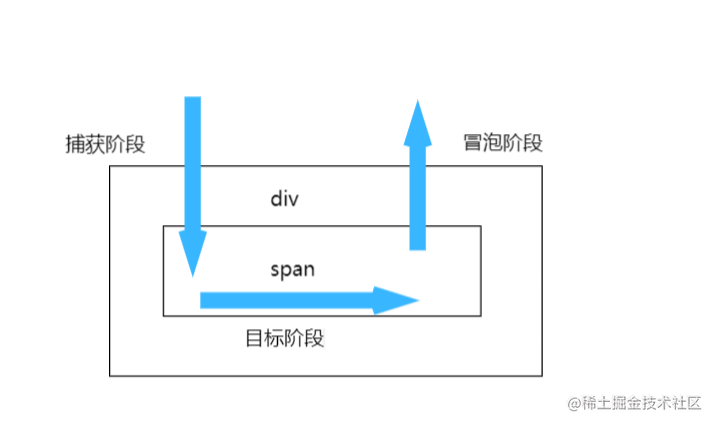
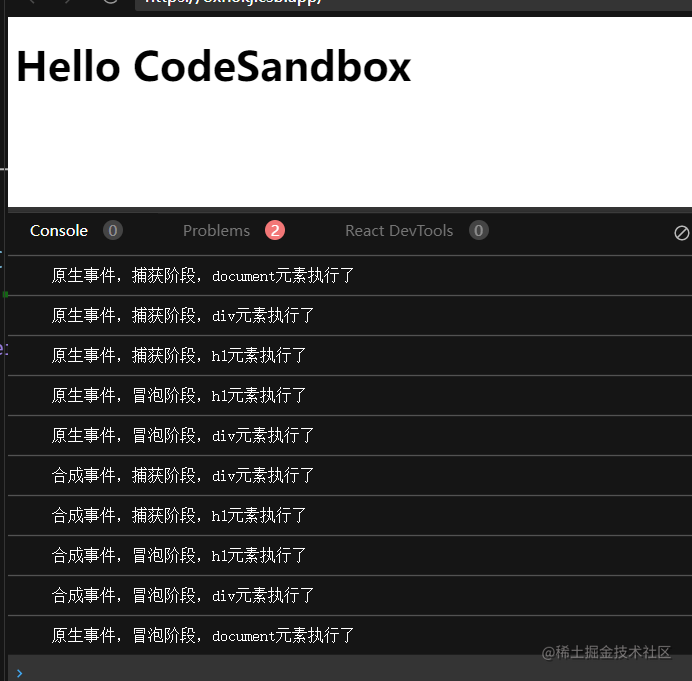
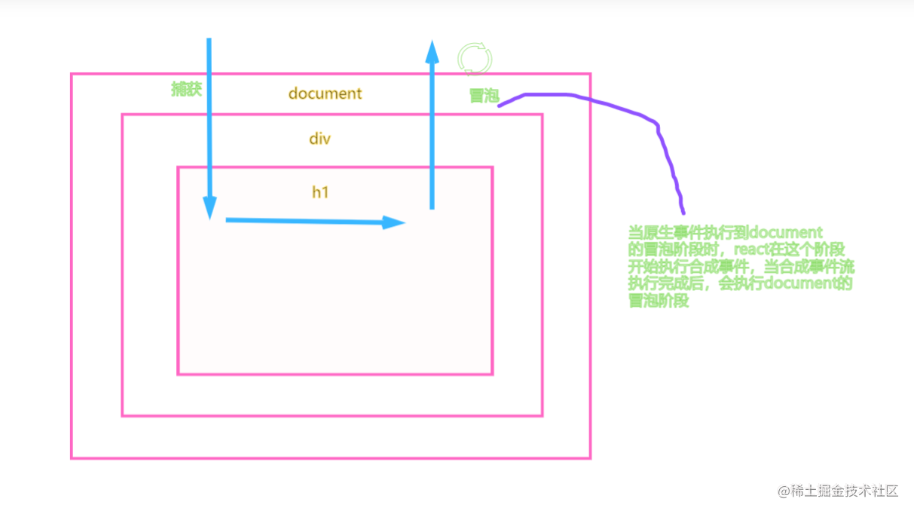
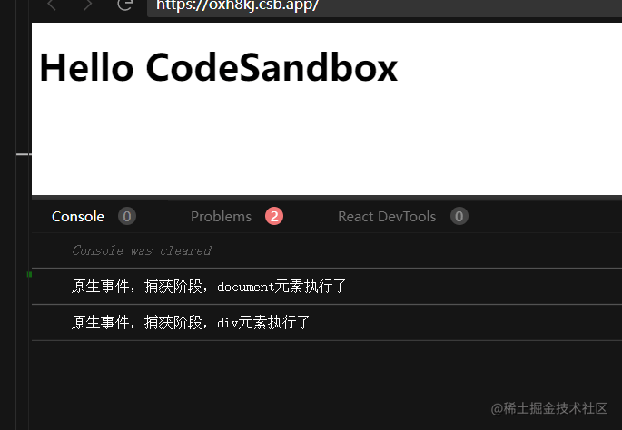
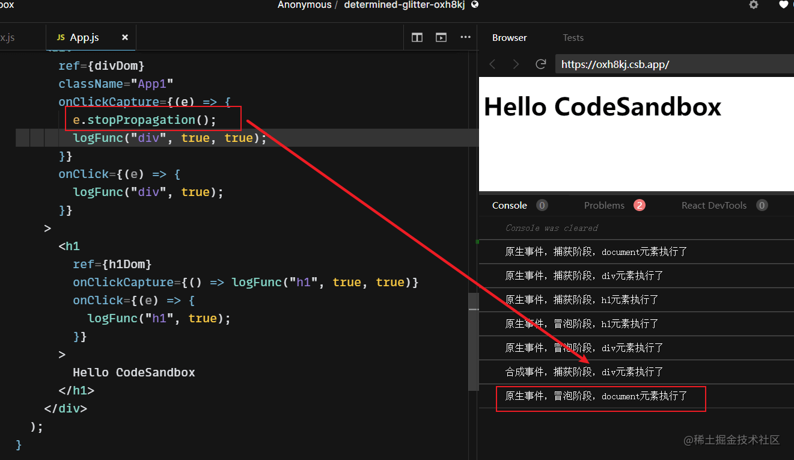
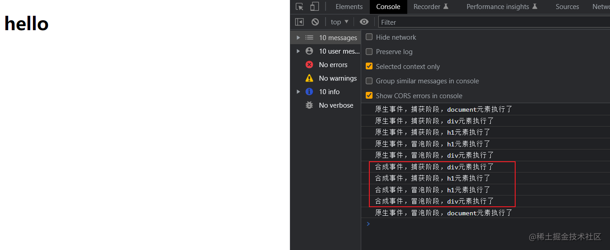
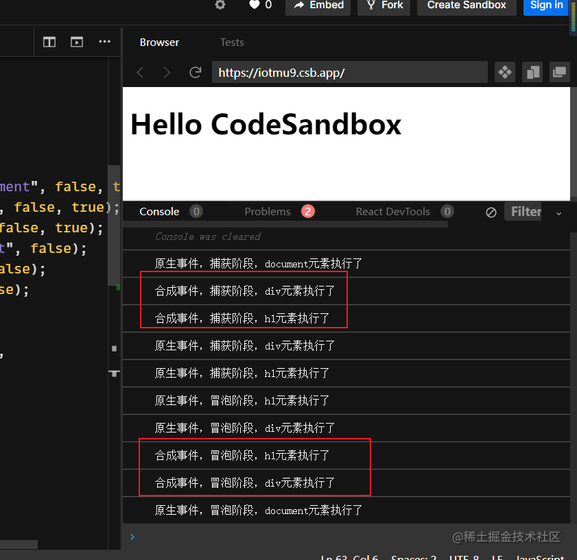
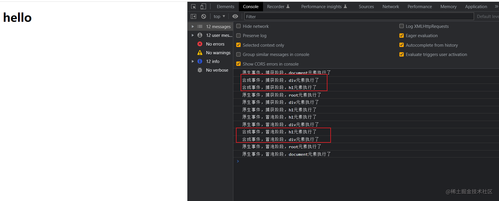

说说React事件和原生事件的执行顺序
参考答案
我们知道，React在内部对事件做了统一的处理，合成事件是一个比较大的概念
为什么要有合成事件
- 在传统的事件里，不同的浏览器需要兼容不同的写法，在合成事件中
React提供统一的事件对象，抹平了浏览器的兼容性差异 React通过顶层监听的形式，通过事件委托的方式来统一管理所有的事件，可以在事件上区分事件优先级，优化用户体验
React在合成事件上对于16版本和17版本的合成事件有很大不同，我们也会简单聊聊区别。
概念
事件委托
事件委托的意思就是可以通过给父元素绑定事件委托，通过事件对象的target属性可以获取到当前触发目标阶段的dom元素，来进行统一管理
比如写原生dom循环渲染的时候，我们要给每一个子元素都添加dom事件，这种情况最简单的方式就是通过事件委托在父元素做一次委托，通过target属性判断区分做不同的操作
事件监听
事件监听主要用到了addEventListener这个函数，具体怎么用可以点击进行查看<br>事件监听和事件绑定的最大区别就是事件监听可以给一个事件监听多个函数操作，而事件绑定只有一次
// 可以监听多个，不会被覆盖
eventTarget.addEventListener('click', () => {});
eventTarget.addEventListener('click', () => {});
eventTarget.onclick = function () {};
eventTarget.onclick = function () {}; // 第二个会把第一个覆盖事件执行顺序
<div>
<span>点我</span>
</div>当我们点击span标签的时候会经过这么三个过程，在路径内的元素绑定的事件都会进行触发<br>> 捕获阶段 => 目标阶段 => 冒泡阶段<br>> <br>

合成事件
在看之前先看一下这几个问题
- 原生事件和合成事件的执行顺序是什么？
- 合成事件在什么阶段下会被执行？
- 阻止原生事件的冒泡，会影响到合成事件的执行吗？
- 阻止合成事件的冒泡，会影响到原生事件的执行吗？
下面一个例子说清楚，点击在线查看编辑
import React, { useRef, useEffect } from "react";
import "./styles.css";
const logFunc = (target, isSynthesizer, isCapture = false) => {
const info = `${isSynthesizer ? "合成" : "原生"}事件，${
isCapture ? "捕获" : "冒泡"}阶段，${target}元素执行了`;
console.log(info);
};
const batchManageEvent = (targets, funcs, isRemove = false) => {
targets.forEach((target, targetIndex) => {
funcs[targetIndex].forEach((func, funcIndex) => {
target[isRemove ? "removeEventListener" : "addEventListener"](
"click",
func,
!funcIndex
);
});
});
};
export default function App() {
const divDom = useRef();
const h1Dom = useRef();
useEffect(() => {
const docClickCapFunc = () => logFunc("document", false, true);
const divClickCapFunc = () => logFunc("div", false, true);
const h1ClickCapFunc = () => logFunc("h1", false, true);
const docClickFunc = () => logFunc("document", false);
const divClickFunc = () => logFunc("div", false);
const h1ClickFunc = () => logFunc("h1", false);
batchManageEvent(
[document, divDom.current, h1Dom.current],
[
[docClickCapFunc, docClickFunc],
[divClickCapFunc, divClickFunc],
[h1ClickCapFunc, h1ClickFunc]
]
);
return () => {
batchManageEvent(
[document, divDom.current, h1Dom.current],
[
[docClickCapFunc, docClickFunc],
[divClickCapFunc, divClickFunc],
[h1ClickCapFunc, h1ClickFunc]
],
true
);
};
}, []);
return (
<div
ref={divDom}
className="App1"
onClickCapture={() => logFunc("div", true, true)}
onClick={() => logFunc("div", true)}
>
<h1
ref={h1Dom}
onClickCapture={() => logFunc("h1", true, true)}
onClick={() => logFunc("h1", true)}
>
Hello CodeSandbox
</h1>
</div>
);
}
看这个例子，当我们点击h1的时候
会先执行原生事件事件流，当执行到document的冒泡阶段的时候做了个拦截，在这个阶段开始执行合成事件

我们用一个图简单描述一下

知道上面的概念，那我们回答开始阶段的后面两个问题
当我们把上面的demo的原生div的stopPropagation() 方法调用阻止捕获和冒泡阶段中当前事件的进一步传播，会阻止后续的所有事件执行
// ...
const divClickCapFunc = (e) => {
e.stopPropagation(); // 增加原生捕获阶段的阻止事件
logFunc("div", false, true);
};
// ...
我们可以看到，当阻止之后，我们点击h1，事件流运行到div的捕获阶段就不触发了，后续的所有的包括合成事件也都不会触发
那当我们给合成事件的事件流中断了会发生什么呢？

可以看到运行到捕获阶段的div之后被阻止传播了，后续的所有合成事件都不会执行了，但是原生的document冒泡还是会执行完。
模拟阶段
<!DOCTYPE html>
<html lang="en">
<head>
<meta charset="utf-8" />
<meta name="viewport" content="width=device-width, initial-scale=1.0, maximum-scale=1.0, maximum-scale=1, user-scalable=no" />
<meta name="theme-color" content="#000000" />
<meta name="description" content="Web site created using create-react-app" />
<link href="favicon.ico" type="image/x-icon" rel="icon" />
<title>浅谈React合成事件</title>
</head>
<body>
<div id="wrapper">
<h1 id="content">hello</h1>
</div>
</body>
<script>
const logFunc = (target, isSynthesizer, isCapture = false) => {
const info = `${isSynthesizer ? '合成' : '原生'}事件，${isCapture ? '捕获' : '冒泡'}阶段，${target}元素执行了`;
console.log(info);
};
// document的派发事件函数
const dispatchEvent = currentDom => {
let current = currentDom;
let eventCallbacks = []; // 存储冒泡事件回调函数
let eventCaptureCallbacks = []; // 存储冒泡事件回调函数
// 收集事件流一路上的所有回调函数
while (current) {
if (current.onClick) {
eventCallbacks.push(current.onClick);
}
if (current.onClickCapture) {
// 捕获阶段由外到内，所以需要把回调函数放到数组的最前面
eventCaptureCallbacks.unshift(current.onClickCapture);
}
current = current.parentNode;
}
// 执行调用
eventCaptureCallbacks.forEach(callback => callback());
eventCallbacks.forEach(callback => callback());
};
const wrapperDom = document.getElementById('wrapper');
const contentDom = document.getElementById('content');
// 一路上注册原生事件
document.addEventListener('click', () => logFunc('document', false, true), true);
wrapperDom.addEventListener('click', () => logFunc('div', false, true), true);
contentDom.addEventListener('click', () => logFunc('h1', false, true), true);
contentDom.addEventListener('click', () => logFunc('h1', false));
wrapperDom.addEventListener('click', () => logFunc('div', false));
document.addEventListener('click', e => {
dispatchEvent(e.target); // 这里收集一路上的事件进行派发
logFunc('document', false);
});
// 模拟合成事件
wrapperDom.onClick = () => logFunc('div', true);
wrapperDom.onClickCapture = () => logFunc('div', true, true);
contentDom.onClick = () => logFunc('h1', true);
contentDom.onClickCapture = () => logFunc('h1', true, true);
</script>
</html>
点击h1可以看到一路上的注册的所有事件已经执行了

React16给document上加的统一的拦截判发事件会在一定情况下出问题，下面举个例子简单说明一下
16案例
点我查看在线案例
import React, { useEffect, useState } from 'react';
import './styles.css';
const Modal = ({ onClose }) => {
useEffect(() => {
document.addEventListener('click', onClose);
return () => {
document.removeEventListener('click', onClose);
};
}, [onClose]);
return (
<div
style={{ width: 300, height: 300, backgroundColor: 'red' }}
onClick={e => {
e.stopPropagation();
// e.nativeEvent.stopImmediatePropagation();
}}
>
Modal
</div>
);
};
function App() {
const [visible, setVisible] = useState(false);
return (
<div className="App">
<button
onClick={() => {
setVisible(true);
}}
>
点我弹出modal
</button>
{visible && <Modal onClose={() => setVisible(false)} />}
</div>
);
}
export default App;写完之后点击按钮Modal被弹出来, 但是点击modal里面的内容modal就隐藏了，添加阻止事件流函数还是不行
原因就是点击之后，事件冒泡到document上，同时也执行了他身上挂载的方法，解决办法就是给点击事件添加<br>e.nativeEvent.stopImmediatePropagation();
注意，这里有读者反馈，使用 e.nativeEvent.stopPropagation() 也能解决点击Modal内部导致被关闭的问题，实际上是不行的，因为这时候 e.nativeEvent.currentTarget 已经是 document了，必须调用 stopImmediatePropagation 才能阻止在当前节点上的冒泡！可以参考 这个demo：
stopImmediatePropagation和stopPropagation的区别就是，前者会阻止当前节点下所有的事件监听的函数，后者不会
那react17及之后做了什么改变呢
16和17的区别
在17版本中，React把事件节点绑定函数绑定在了render的根节点上，避免了上述的问题,
用上面的demo的在线案例把版本改成17之后，可以发现事件的执行顺序变了

模拟17版本
<!DOCTYPE html>
<html lang="en">
<head>
<meta charset="utf-8" />
<meta name="viewport" content="width=device-width, initial-scale=1.0, maximum-scale=1.0, maximum-scale=1, user-scalable=no" />
<meta name="theme-color" content="#000000" />
<meta name="description" content="Web site created using create-react-app" />
<link href="favicon.ico" type="image/x-icon" rel="icon" />
<title>浅谈React合成事件</title>
</head>
<body>
<div id="root">
<div id="wrapper">
<h1 id="content">hello</h1>
</div>
</div>
</body>
<script>
const logFunc = (target, isSynthesizer, isCapture = false) => {
const info = `${isSynthesizer ? '合成' : '原生'}事件，${isCapture ? '捕获' : '冒泡'}阶段，${target}元素执行了`;
console.log(info);
};
// document的派发事件函数
const dispatchEvent = (currentDom, useCapture = false) => {
let current = currentDom;
let eventCallbacks = []; // 存储冒泡事件回调函数
const eventTypeName = useCapture ? 'onClickCapture' : 'onClick'; // 冒泡事件或者捕获事件的名称
const actionName = useCapture ? 'unshift' : 'push';
while (current) {
if (current[eventTypeName]) {
eventCallbacks[actionName](current[eventTypeName]);
}
current = current.parentNode;
}
eventCallbacks.forEach(callback => callback());
};
const wrapperDom = document.getElementById('wrapper');
const contentDom = document.getElementById('content');
const root = document.getElementById('root');
// 一路上注册原生事件
document.addEventListener('click', () => logFunc('document', false, true), true);
root.addEventListener(
'click',
e => {
dispatchEvent(e.target, true);
logFunc('root', false, true);
},
true
);
wrapperDom.addEventListener('click', () => logFunc('div', false, true), true);
contentDom.addEventListener('click', () => logFunc('h1', false, true), true);
contentDom.addEventListener('click', () => logFunc('h1', false));
wrapperDom.addEventListener('click', () => logFunc('div', false));
root.addEventListener('click', e => {
dispatchEvent(e.target); // 这里收集一路上的事件进行派发
logFunc('root', false);
});
document.addEventListener('click', () => logFunc('document', false));
// 模拟合成事件
wrapperDom.onClick = () => logFunc('div', true);
wrapperDom.onClickCapture = () => logFunc('div', true, true);
contentDom.onClick = () => logFunc('h1', true);
contentDom.onClickCapture = () => logFunc('h1', true, true);
</script>
</html>
区别就是在外层增加了一个root模拟根节点，修改了dispatchEvent的逻辑
可以看到，效果已经和17版本的一样了

回看16demo，切换版本到17，当我们切换到17的时候，用stopPropagation就可以解决问题了,<br>原因就是他在root节点上绑定的事件冒泡函数，stopPropagation切断了事件流，不会流向到document身上了
总结
16版本先执行原生事件，当冒泡到document时，统一执行合成事件，17版本在原生事件执行前先执行合成事件捕获阶段，原生事件执行完毕执行冒泡阶段的合成事件,通过根节点来管理所有的事件
原生的阻止事件流会阻断合成事件的执行，合成事件阻止后也会影响到后续的原生执行
- 事件传播阶段
- 当一个事件发生时,事件会首先在 DOM 树的根节点开始捕获,然后一路向下传播到目标元素(事件源)。这个过程称为"捕获阶段"。
- 到达目标元素后,事件会开始在 DOM 树向上冒泡,这个过程称为"冒泡阶段"。
- React 事件系统
- React 事件系统完全模拟了 DOM 事件的传播机制,包括捕获阶段和冒泡阶段。
- 当一个 React 事件被触发时,它会先在 React 合成事件系统中进行捕获和冒泡,然后再传播到原生 DOM 事件。
- 事件执行顺序
- 当一个 React 事件被触发时,它的执行顺序如下:
- React 事件捕获阶段
- 原生 DOM 事件捕获阶段
- 原生 DOM 事件处理程序
- React 事件冒泡阶段
- 也就是说,React 事件会先于原生 DOM 事件执行。
- 阻止事件传播
- 在 React 事件处理程序中,可以使用
event.stopPropagation()来阻止事件继续向上冒泡。 - 在原生 DOM 事件处理程序中,可以使用
event.stopPropagation()来阻止事件继续传播。